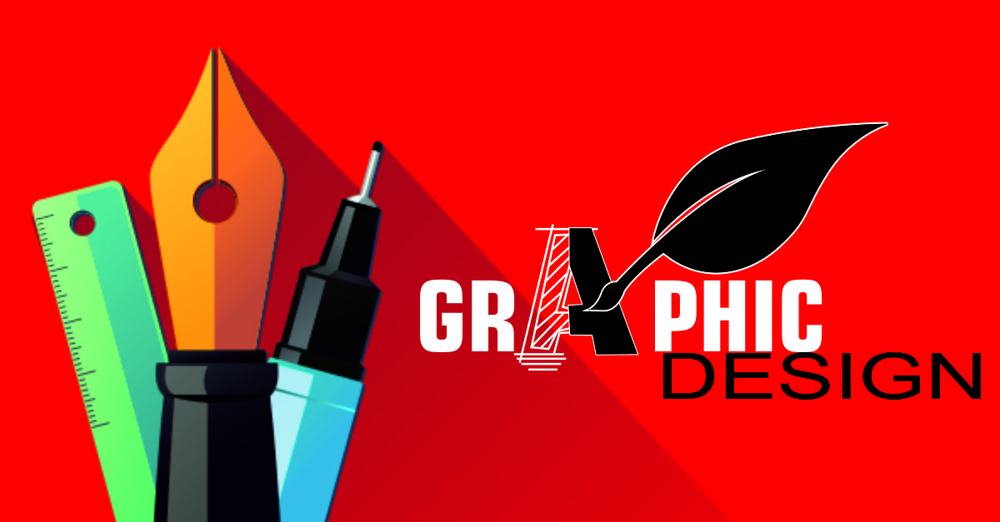

WAP INSTITUTE
An international certified brand of computer science enginnering institute
| Home | Images | Videos | Movies | About us |
About wap
wap stands for windows applications and programming institute . we offers international qualities of educations like softwares engineering , game development , robotics engineering , animations and vfx , many more . join us to improve your technical skills . wap stands for windows applications and programming institute . we offers international qualities of educations like softwares engineering , game development , robotics engineering , animations and vfx , many more . join us to improve your technical skills . wap stands for windows applications and programming institute . we offers international qualities of educations like softwares engineering , game development , robotics engineering , animations and vfx , many more . join us to improve your technical skills . wap stands for windows applications and programming institute . we offers international qualities of educations like softwares engineering , game development , robotics engineering , animations and vfx , many more . join us to improve your technical skills . wap stands for windows applications and programming institute . we offers international qualities of educations like softwares engineering , game development , robotics engineering , animations and vfx , many more . join us to improve your technical skills . wap stands for windows applications and programming institute . we offers international qualities of educations like softwares engineering , game development , robotics engineering , animations and vfx , many more . join us to improve your technical skills .
Flowers Sample
Designing Sample
